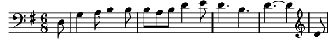

1. [TB] D'où venez-vous, petits bergers,
d'où venez-vous ?
[SA] Nous venons de l'étable, de s'y promener
Avons vu z'un miracle qui vient d'arriver
Refrain:
Alléluia, Alléluia
[TB] Alléluia, Alléluia
[SATB] Alléluia
2. [TB] Qu'avez-vous vu, petits bergers,
qu'avez-vous vu?
[SA] Avons vu dans la crèche, un petit enfant
Qui sur la paille fraîche dormait doucement
Refrain
3. [TB] Qu'entendiez-vous, petits bergers,
qu'entendiez-vous ?
[SA] Y avait trois petits anges, descendus du ciel
Qui chantaient les louanges du Père éternel
Refrain
4. [TB] Qu'avez-vous dit, petits bergers,
qu'avez-vous dit ?
[SA] A St-Joseph son Père, à la Vierge Marie
Avons fait la prière, d'être en Paradis
Refrain